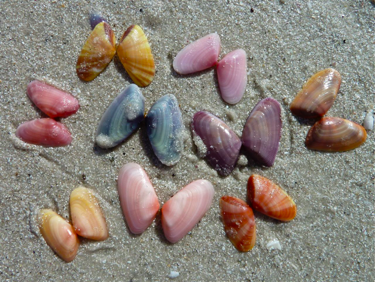
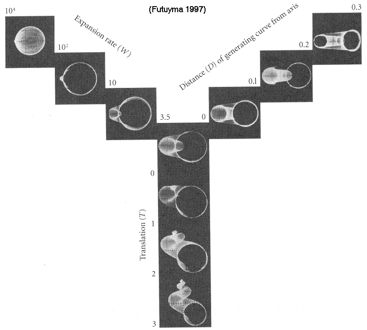

Welcome to the wonderful world of shells! Although here at Lawrence we may not be close to an ocean, that doesn’t mean we shouldn’t learn about these neat specimens.
Although these shells are all dead, seashells are built by and lived in by marine mollusks, which are a lot like snails. Mollusks are very important to humans - not only are they a delicious food consumed by many people across the globe (steamed mussels or fresh oysters anyone?) They are also food for fish which humans consume in large quantities. In fact, 1 in 7 people rely on seafood as their primary source of protein. In addition to being used for food, seashells are broken down by the waves into sand that makes our beaches and underwater habitat. Without them, the food webs of many freshwater and marine ecosystems would be thrown off.
The future is not looking great for these shells, though. As the temperature of the earth rises, ocean temperature and acidity are also rising. This is gravely changing the habitat that these shells live in and threatening to affect every stage of their life cycle, reducing the amount of shells that will be fertilized, hatch and reach adulthood. It will also likely reduce their shell size and strength, and some studies have even shown climate change will affect their behavior causing them to walk in circles when attempting to hunt for prey.
All of these shells were donated by Ann Schneider, a friend of Lawrence (and supplemented by a few from my own collection).
In this display, each case of shells correlates to a category of information. Knowledge is the first step in preserving our ecosystems, so dive in and explore this these amazing creatures from the comfort of Appleton.
(Tap to continue)
Just because shells are of the same species doesn’t mean they have to look alike! Each of the rows in this case represents a different family of shell. The first row of shells all belong to the family Naticidae or moon snails. The second and third rows are made up of snails from the family Conidae or cone snails and the final row is made up of shells from the family Volutidae or volute shells.
It is hard to judge exactly the purpose that colors serve for each shell, but there are a lot of hypotheses.
Shells can use color as camouflage for their environments. However, brightly colored shells use their color as a warning to predators that they could be poisonous.
Some species, like Donax variabilis shown below, purposely look different to confuse their predators. If they are all different colors, their predators don’t have a consistent image of what they look like.
 http://www.iloveshelling.com/blog/category/seashells/coquina/What does a shell spend its time doing underwater? Well, it has to eat just like the rest of us. Gastropods can be scavengers, browsers, grazers, suspension feeders and often, vicious predators. This display shows some mollusks that have fallen victim to their own kind.
All the shells in this case are moon snails that have been devoured by their own species. See that hole in their shell? That hole, called a countersunk hole, is a sure sign of moon shell predation. Once they have made the hole they insert a proboscis into the shell to consume their prey.
One of the first scientists to research shell predation was Geerat Vermeij, now a professor at UC Davis. Blind since the age of three, Vermeij made his discoveries of predation through his sense of touch.
Have you noticed that all the shells in this display have the same twisting shape? So did Sir D’Arcy Wentworth Thompson, a Scottish scientist who wrote the famous book “On Growth and Form” in 1917 to attempt and explain many of the classic shapes we see in nature.
In the 1960s, with the invention of the computer, a scientist named David Raup was able to expand upon Thompson’s rules and create a computer model of all the possible shell shapes in the world. He was able to do so by increasing or decreasing three properties of a shell, the height (which he called Translation or T), the whorl size (or expansion rate, W), and the distance of the curve from the axis (D).
Humans have used shells throughout history. Shells have been used as currency by a native culture on every continent except for Antarctica. In addition to currency, shells have been used as jewelry, tools, containers, religious symbols and much more. Here are a few examples of their most popular uses.
The first shell is a cowrie shell which was often used as currency in different cultures.
“Mother of Pearl” is the common name for the inside nacre coating of oysters. It was often used to make buttons and was responsible for starting a large button industry along the Ohio river in the early 1900s. The industry became less important as plastic buttons came into use.
Shells have often been displayed in art, like the marble cone shell displayed here which was featured in Rembrandt’s “De Schelp” or “The Snail” in 1650.
Look at the cone snail displayed and the one drawn by Rembrandt here: do you notice a difference?
The shells open on different sides. It is incredibly rare for shells to open on the left or be “left-handed” as they are called by scientists. It is unknown as to whether Rembrandt made a mistake or made this change on purpose because he believed the shell to be more beautiful this way.
Continued on next page...
Another famous work is “The Birth of Venus” by Sandro Botticelli made in the 1480s. Venus is emerging from a scallop shell, a little bigger than the one seen in this display. Shells are often used as a symbol of fertility and the feminine physique because of their close association with the ocean and their unique shape.
text
text
text